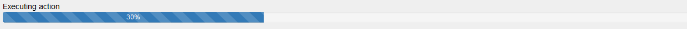

The purpose of the Progress Indicator User Control is to be able to show an indicator of the activity of a process (or the progress of the process when the percentage of the advance is known).

This user control is only available for web applications in order to give feedback to the end-user in particular for processes that do not send an immediate response.
Giving the end-users a feedback on the action they triggered is one of the most important features an application should have. An application which doesn't give feedback on the actions that are being performed misleads the user into thinking that it may have crashed, or his gesture wasn't properly recognized.
The Progress external object provides different methods and properties that can be used to manage and display this control.
How To: Using the Progress Indicator in web applications
Progress external object